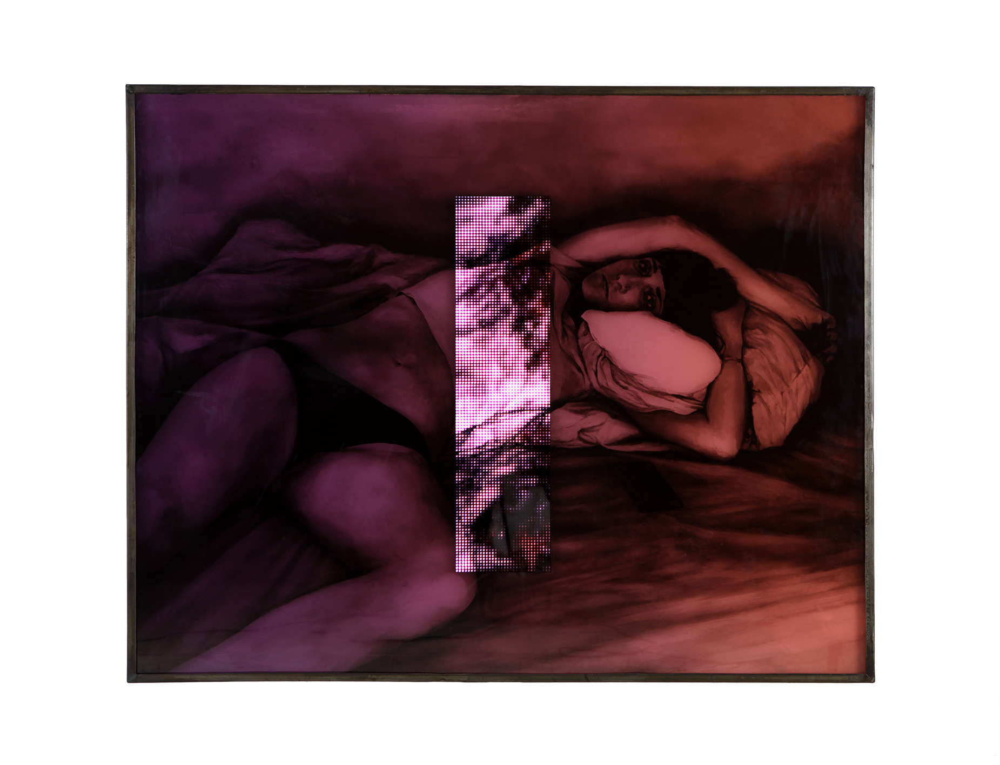
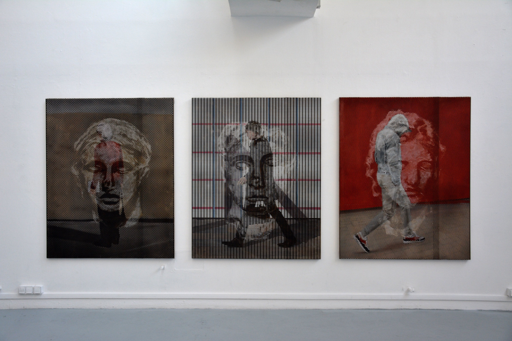

OISEAUX DE NUIT
“The night is conducive to metamorphoses and to the blurring of forms. In cities, anonymous silhouettes wander, alone or in groups, constantly captured by the mechanical eye of surveillance cameras on street corners and outside nightclubs. Lenny Rébéré captures the live feeds of these cameras and keeps the trace of these bodies – an imperfect, fragmented, pixelated trace. The great photography theorist, the American writer Susan Sontag, wrote that “to collect photographs is to collect the world”; Lenny Rébéré, for his part, collects the memories of the night. (...) These images, together with photographs of parties gleaned from anonymous networks, are then reworked on a computer and patiently reproduced in pencil, oil or ink, recomposed, superimposed, combined with layers of sandblasted glass, neon and metal, at times recalling the look of street furniture. Like ghosts, in the manner of the often hazy memory of party nights, the bodies melt and merge into new floating figures of spectral instability. All this leads to a troubled feeling: certainties vanish and make way for chimeras.” Excerpt – Ninon Duhamel, 2025. As part of the exhibition Oiseaux de Nuit, a commission by the LaM, La Condition Publique, Roubaix
SCREEN STACKING
*The term Screen stacking, which gives the work its title, is used in behavioral studies to refer to watching several screens at the same time on different devices.
TOUS CEUX QUI ONT CONTINUÉ À COURIR »
By Romy Hammond
“Tous ceux qui ont continué à courir” (“Those who kept on running”) is the story of a dark night in a seaside resort, an evening populated by anonymous bodies of which only fragments remain. Lenny Rébéré unfolds this scenario through works that are so many shards of a nocturnal wandering, oscillating between elation and anguish.
It all begins by the sea. Individuals without individuality, aggregates of pixels, swim, play, wander. Bodies gradually dissolve and merge with the waves, turned to mist. A (super)natural catastrophe, or a glitch in the matrix? This scene was captured by the voyeuristic eye of surveillance cameras, their live stream just a connection away. Encapsulated and immersed in an oily liquid, it seems no more than a blurred memory, frozen in formaldehyde.
Let’s set our digital prostheses aside and mingle with the party, a drink in hand. The humid atmosphere of summer evenings, when a storm looms after a scorching day, is palpable. Of the bodies present, only fragments remain, all traversed by a creeping disturbance that distorts or fractures them.
Large-format works made of sandblasted glass – the first iteration of this technique in the artist’s practice – and inked with spectral presences reveal, in the background, mysterious paintings in the gaps of light where the ink’s shadow has not encroached. Through an offline montage of images born or found online, Lenny Rébéré creates an analogue morphing that produces unsettling deformations in the bodies, into which our own reflection comes to merge in situ.
The party goes on, and we scroll past necks, backs and hands, some aggressively pierced by metal. According to the artist, these breaches, with their sinuous curves, restore a measure of organic quality to these fragments of bodies even as they express the impossibility of containing these images within an orthonormal frame.
In the snapshots of this evening, a short time and a long time coexist: that of a single night, and that of the generalized free circulation and constant flow of images of everyday life, where the banal, the absurd, the historic and the explicit sit side by side.
As in Kōbō Abe’s The Box Man, there are “those who kept on running,” yielding to the liquidity of our society*. The novel’s protagonist observes them through a slit in the box he has placed over the upper half of his body to protect himself from a world moving too fast, while we join the frantic race by watching them through our screens. Some step aside, preferring the liquidity of the ocean and the coaxing of a gentle intoxication. This is where Lenny Rébéré tries to take us, if only for the time of a midnight swim.
Romy HAMMOND, June 2023
* The notion of liquid society, coined by sociologist Zygmunt Bauman, refers to our contemporary societies, whose framework is in constant change and which are characterized by (over)consumption and a hyperflexibility of social relations.
HORIZONS
2022 - 2025
“In 2022, Lenny Rébéré unveiled his installation Horizons* for the first time on the occasion of the group exhibition “L’image d’un monde sensible” (Maison des arts plastiques Rosa Bonheur). See below
The work consists of 15 LCD screens scattered through the space on telescopic poles, on which datamoshed videos (destroyed live) loop, based on surveillance cameras accessible online. Ghostly silhouettes can be seen strolling along the shore, swimming, playing, before gradually dissolving into the pixels of the corrupted file. Then the sweep starts again, and once more the sea, the walkers, the beach; liquid images of a world that constantly slips away and that the machine’s eye imperceptibly records.”
EXCERPT – Thibault Bissirier, 2023.
*Horizons was also presented in 2023 in the exhibition Tous ceux qui ont continué à courir at Galerie Isabelle Gounod, and more recently in the exhibition Nymps Just Wanna Have Fun, at Le Houloc in Aubervilliers.
The screens and the Raspberry Pi boards were immersed in a dielectric liquid (one that does not conduct electricity) used to cool data centers. – see opposite
EXTIMIT
Behind the blur that runs through Lenny Rébéré’s portraits, faces can be recognized, male, female or indeterminate. Here, the framing is random, as is the format of the works. This gallery of anonymous people makes up a cycle entitled “Extimit”. It refers to the Lacanian term “extimacy” which, as opposed to intimacy, is the voluntary exposure of oneself to the eyes of others in order to feel that one exists. “I often draw a parallel between extimacy and the ritual of social networks – not to be confused with exhibitionism. The adoption of a shortened title ‘Extimit’ resonates more like a name, a first name given to individuals, reflecting a kind of ambiguity, not to say cynicism, as a nod to the origin of these portraits that were found or, in a way, stolen,” the artist explains.
Gleaned by the artist from various iconographic sources, these portraits of anonymous people come as much from street surveillance cameras and Google Street View captures as from crops of urban video scenes and personal snapshots. Already blurred for some when Lenny Rébéré took hold of them, these faces, dehumanized by an extreme, pixelated crop, extend this aesthetic tension through the artist’s gesture. Wishing to present a crowd of anonymous people of different temporalities and origins, he chose to work on some of the glass of his drawings’ frames through sandblasting. He explains: “An abrasive is projected at high pressure onto the glass to frost it, in the form of a flat tint or a drawing, before inking the affected area. It becomes visible through a childlike, naive drawing, close to graffiti. It is a gesture with no possible repentance, as if to restore a personification to these dehumanized portraits while offering the viewer a disruptive element that may lead them to question the choice of the reworked portrait.”
Through the improvised action over the drawing and on the glass of the frame, Lenny Rébéré leaves a personal trace that contaminates the anonymous. The concept of extimacy thus takes on its full meaning: in this way, “existing through the eyes of others” takes on a meaning that is as futile as it is imposed.
Maxime Gasnier for The Steidz
VERTIGO
By Thomas Fort
A beach under a gray sky, swept by the lens of a surveillance camera. A few onlookers, like figures adrift, stroll there. Observed from afar, these passers-by become meager silhouettes blurred by the pixelated grain of the video recording. Alone, they cross a deserted seaside landscape whose activity has been abruptly interrupted following a crisis whose scale we could not have imagined. There is nothing extraordinary about this scene, but, transferred by Lenny Rébéré onto an LED panel with garish light, it catches the eye and turns the everyday into spectacle. The nature of this document, retrieved from an Internet platform that allows anyone to take an illusory breath of air, and its displacement onto a medium of advertising origin, confirm that “all that once was directly lived has become mere representation”(1).
As early as the late 1960s, Guy Debord saw in this a shift of society toward a regime of experience in which it is no longer a question of apprehending reality in a tangible way, but rather of consuming it through media flows that endlessly reformulate it. These weave a dense and complex mesh of images and virtual relations, through which everyone becomes a tourist of ephemeral and interchangeable realities (2). The luminous screen, introducing the exhibition, thus refers us to the “chronic voyeurism”(3) of our society under the dizzying reign of images. Its glow fascinates as much as it creates discomfort, capturing our attention while trapping us in a cycle that goes round in circles.
“Vertigo” instills this seductive unease at the heart of the works or between them. Avoiding any imposed narrative, the course unfolds in a fragmentary, non-linear way across the two spaces of the Isabelle Gounod gallery. Each image becomes a remnant of a fragmented, silent general plot. For several years, Lenny Rébéré has built up a vast atlas in the form of a digital database in which thousands of images taken daily from the Internet are catalogued. While he draws some of his subjects from it, here he complements his selection with personal photographs taken during
his holidays. This mixture underlines the porosity between micro-narratives and collective memory in the visual writing of History. Landscapes, lascivious bodies, close-up faces or divers then appear like lingering figures, harboring a strange familiarity. Unstable clues of the “informational cloud”(4) engendered by globalization, where everything is a pretext to be processed and then archived, the artist brings each of his images to the threshold of their crystallization. Scratching the skies on negatives of anonymous photographs taken during the first paid holidays of 1936, he subverts temporality and tips daytime scenes into the nocturnal. The colored filters covering the glass plates also set the tone. They give the representations an artificial look
while accentuating their seductive effect. These color gradients, like a whim, pervert the images, veiling them in a twilight atmosphere, between reverie and erotic melancholy.
The discontinuity of the sequences shown in “Vertigo” also inspires a form of melancholy. Juxtaposing close-ups
and wide shots, bodies and landscapes, still and moving images, Lenny Rébéré produces unexpected collusions between scenes revealed elliptically. Something escapes, as if what we were observing were about to collapse. The LED screens that punctuate the course confirm this feeling, since depending on our position, near
or far from them, the image either comes together or disintegrates into a blurred texture. The images are pushed to their limits. While the illusionism of the painterly execution invites a plunge, the mirroring surface of the support refers,
on the contrary, to a surface effect. The figures revealed flush with the glass thus play on the “shadowy transparency” defined by Michel Guérin. The works thereby delimit a dialogic space open to the investment of our body as well as our gaze.(5) The translucent quality of the materials combined with the fragmentation of the images in space therefore calls for setting the exhibition in motion. It is thus up to the viewers to activate the montage of the different planes within a resolutely “para-cinematic”(6) course. It is up to them to inhabit the intervals that separate the works or the ellipses they contain, and to become intoxicated there to the point of vertigo. This symbolic dizziness, far from being merely a lure, remains a poetic means of engaging in a critical reflection on our relationship to the images of the world.
Thomas FORT, 2021.
PULSE
Pulse, 2021, video on LED panel, 10-minute loop, 15 x 15 x 10 cm
GHOST FLOWS
The Ghost Flows series continues on from the Vertigo exhibition, presented at the Isabelle Gounod gallery in 2021, where the translucent quality of the materials, combined with the fragmentation of the images used, plunged the viewer into a whirlwind of ephemeral and interchangeable realities. Here, the image takes on a social character, our interpretation of it depending both on its context of creation and on the moment of its perception, both charged with subjectivity. These are no longer holiday photographs but nocturnal views of parties, taken in restrictive contexts and published online, that Lenny Rébéré comes to manipulate. They blend the intimate with the inaudible collective; they tell us of carefreeness, mishaps and the deviances of a silent joie de vivre. These source images are no longer intended solely for anonymous display but to expose an assumed extimacy. Lenny Rébéré questions the way we look at images and the impact they have on us.
The works he presents – whether dissolving through algorithms such as datamoshing (computer code enabling the digital destruction of a computerized image), or altered in their reading through assimilations such as engraved and inked glass – absorb the viewer, plunging them into an altered state, into a “flow” from which another, more mysterious, ethereal and penetrating meaning emerges.
Hugo Segal - Saurel / 2022
PASSANTS
“There are these lost passers-by on whom our gaze stumbles. In fact, they could be you, or me. For they are the walkers of Google Street View, today wandering, anonymous souls hidden in our screens. Lenny Rébéré seizes these strangers and gives them, if not a body, a pictorial consistency. But hidden behind this hollowed-out sheet metal, their image is revealed in fragments depending on the areas covered or not by the metal panels. The artist has engraved the forgotten faces of historical figures there.
More than a confrontation between eras, these temporal strata materialize the ghostly life of images and create a survival of past forms, a builder of the DNA of our culture.
These anachronisms make Lenny Rébéré an anthropologist-artist of images, driven by the desire to know who the true ghosts of our era are: these legendary figures or our own bodies, shattered by pixels.”
Camille Bardin January 2019
“Au delà du visible” (excerpt)
INFRAS
“I cannot omit this title, “Infras”, which comes like a breath in the reading of Lenny Rébéré’s recent pieces. It is indeed the prefix that Marx and Engels placed at the front of “structure”, thereby creating the unifying concept of the production systems of our societies, the antonym of “superstructure”. For these images are the basis of a collectivity without territory, of a thought without a body that grows through the Internet and becomes, according to Lenny Rébéré, the support of a sociology of our relationships.
But above all, infra is the radiation that goes beyond the visible spectrum of light, the radiation that goes off to nestle beyond the limits. And that is where Lenny Rébéré takes us. The reflection of the glass has, moreover, already caught our features, now engulfed in an alternative space, at the crossroads of worlds: hidden between the virtual and the real, the intimate and the collective. These works thus crystallize the relationships we have with images.
For while we never cease to stress their impressive quantity, while we still tirelessly try to analyze this general and permanent zapping, nothing helps: images escape us; they assail us daily, seize our attention, then vanish just as abruptly into the limbo of our networks.”
Camille Bardin
“Au delà du visible” (excerpt) January 2019
D'UN INSTANT À L'ÉTERNITÉ
“Behind the window that occupies the center of the composition, a party is taking place. One figure has not been invited; from outside, through the glass, it tries to observe what it cannot take part in. A spectator itself, it reflects and embodies the position in which we ourselves stand. The reflections of the depicted window are echoed on the glass plates used by the artist. Those depicted by the artist opacify the screen behind which the figure hides; those reflected on the glass reveal to us not only the one before whom we stand but also the world that continues to exist around it. As we come closer, it is our own face, a part of a body or of clothing that is reflected in turn, adding a new layer to these ambiguous images, already difficult to grasp fully.”
Horya Makhlouf – Excerpt from D’un instant à l’éternité, La Graineterie, for Jeunes Critiques d’Art – 2017
«ICI & LÀ»
By Julie Rossello-Rochet
For several years, Lenny Rébéré has been developing his technique from harvests of images found on the internet, film stills and personal snapshots. He reproduces these images keeping only their outlines and superimposes them on one another, without departing from the work of “stacking” strokes and values in pencil and charcoal. He thus leads his drawings to the threshold of darkness, before letting streaks of light break through, playing with the balance of whites and blacks. These stackings of representations, sometimes offset, sometimes recropped (close-ups, details), create chance encounters between the characters who inhabit them, and reveal the depths of field of the final image.
By operating through a gap from reality – whether in his video work, on paper, on canvas or on glass (engraved and oiled glass) – Lenny Rébéré stages situations to come. Here, an empty set that disturbs by its bareness; there, the possibility of an encounter that may never take place. In his scenographies, the artist alternates between staging crowds, the agglutination of bodies to the point of smothering the canvas with flesh, and the vertigo of absence. Each of his drawings gives off a feeling of incompleteness inherent to disappearance, questioning the part of our existences that is, at every moment, wavering.
It is thus that our drifts, when we look without seeing or in order to see better, rise up around us as what Lenny Rébéré elegantly calls “temporary palaces” [2016 video and sound]; those of dreams, of nightmares but also those of our oneiric visions that seem to arise from nowhere.
These sensations of unease and strangeness are invitations to see between and beyond the images by taking the time, the time of decipherment proper to the rebus: to enter the image to see and let one’s imagination work, to spot the riddles and details; to conduct one’s investigation, to acclimatize one’s eye. The visual flows of advertisements, selfies, flat and smooth photographs that blind our lives here become materials in the service of a work that then encourages us to invent stories.
As a poet of the image, Lenny Rébéré engraves a world of apparitions, imbued with neo-romanticism and darkness. His line urges us to adjust our eye to the “zero of seeing and feeling”1 so that it may grasp with clairvoyance what these canvases offer it. The artist thus invites us to experiment with our capacity to invent what we see, for the duration of a contemplation.
Julie Rossello-Rochet, Dramaturge.
June 2016.
Hans Bellmer, Petite anatomie de l’inconscient physique ou l’anatomie de l’image [1957], Paris: éditions Allia, coll. “Petite collection”, 2002.
DESSINS
At first contact, Lenny Rébéré’s drawings set out an ambiguous, floating landscape that requires a work of decoding and demands our full attention. The image struggles, fights against our desire to grasp it in its totality, to describe it, to understand it. It struggles against our gaze, tests it and imposes its own movement, its indistinctnesses and its breaths. It hardly gives the gaze the chance to rest on any one detail in particular, so many are intertwined.
“Series of images scroll across my screen”: seizing the world by zapping without managing to give any value to what passes before our eyes. The artist here positions himself as a spectator, even as a perceiver, picking out of the flow of the internet scraps of lives, photographs of events, advertisements... of those digital images made public and available to all that leave no alternative but to feel the intimacy of anonymous beings, which the artist blends with his own, with his story, with his images (photographs of holidays, of friends, of places and landscapes visited). Evocative of a chaotic and saturated world where one no longer discerns the singular from seeing too much, where the intimate and the collective are bound together, Lenny Rébéré’s practice thus begins with accumulation.
Then comes the time of recomposition, when the hand replaces the eye and mobilizes memory. The images are then laid down on paper or canvas. The process is long, the technique precise: through the continuous gesture of drawing, Lenny Rébéré puts action and will back at the heart of creation. These images then gradually regain the physicality of which their digital nature, far removed from the physico-chemical nature of the first photographs, had deprived them. For these orphaned images, multiple and bodiless, it is the time of synthesis and reincarnation.
Fragile, vibrant, transparent like tracing paper, they nevertheless do not manage to settle completely, but remain instead in a singular and disconcerting in-between where everything seems at once near and far. The planes merge, the composition almost gives up any salience; what remains in the end is only the ghostly image of a fleeting landscape inhabited by indistinct figures or suspended bodies, as if enclosed within the frame of an empty support. Things, places, eras merge, entangle, overlap and contaminate one another to compose a third, hybrid image, which is as much fiction as reality. A synthetic image acting like a dream, through afterimages, fades and successive impressions.
Here the real mixes with the possible and composes a living screen on which our fantasies can be inscribed, their emergence all the more striking as it draws us to both sides of the mirror. Oscillating between the will to emerge and the temptation to fold back on itself, the image, having become a phenomenon, thereby reconciles the aesthetic category of the visual (the image) with the ontological category of the event (the moment of perception): the action is no longer merely described in, but produced by the image, at once object and subject of our gaze, now capable of “making visible the organizing activity of perceiving.”*
Thibault Bissirier, October 2015
* Attributed to Paul Cézanne.
EXHIBIT
2015, engraved and inked glass, metal structure, 90 x 130 x 245 cm
LITTLE DATAS
2021, random online videos with fewer than 10 views, destroyed by datamoshing live every 10 minutes.
Raspberry Pi, LCD screen, speaker, 8.5 x 5.5 x 2.5 cm (x5)
DOWN
“On the transparent screens, closed faces stagger. Harvested from the internet, these images all come from the same source: an account publishes these wanderings every day, delivering them to the eyes of millions of viewers. Tracked in post-production, the faces appear to us in their intimacy and place us in the position of an intrusive voyeur. What place is there for the individual in this hyper-connected world?
(...) Through the noise we catch a few words, almost inaudible, somehow mechanical, taken from texts by Daniil Kharms. Generated by computer from assembled soundtracks, the sound installation adds to the strangeness of the space and of the images circulating on the screens. We are torn between curiosity and unease.”
Grégoire Prangé, for the exhibition Le Drive, 2022
GALAXY
From now on, a single click makes it possible to travel across the globe: webcams placed in various locations allow this motionless wandering. “Galaxy” is, initially, the name of a bar with a garish sign, visible under the attentive lens of one of these many webcams. The project consists of a large piece in broken glass and a set of several screens on which video excerpts are shown, taken from this live webcam installed in a busy street on the other side of the world, accessible 24/7 and free of charge on the Internet.
After a capture lasting a night via the computer screen, then the fragmented broadcast of these recordings, the viewer is confronted with interactions between anonymous people taken out of context, which suddenly take on an almost documentary dimension. Supposed relations of seduction, friendship, hatred or violence reach us like a new, condensed nocturnal world, ready to be deciphered.
In a second stage, certain scenes from these recordings were isolated and then integrated into mirrors (glass engraved and inked on the back) taking the form of micro-narratives. Playing on a mise en abyme that doubles the space of reception of these images, Galaxy then places the viewer no longer in front of, but on the other side of the screen, while pointing out the fragility and ambiguity of the relationship to the world offered by these new digital tools based on one-way exchanges from watcher (turned voyeur) to watched.
So a whole contemporary ethnography takes shape, no longer an outside testimony but images from the inside, reflexive. And it is sometimes necessary, through a shift that escapes us, for a dissociation to occur, for the glass screen to be turned over so that its space, its volume, is restored to the moment. So that we see ourselves seeing. The gaze leaves its purely visual field, calls on memory, exposes itself to our acuity. The fleeting image that seizes us has the violent sharpness of a realization: we realize it, we unfold it.
And it is this unfolding of experience in this detachment that we call image, like language, a symptom of a discreet immensity.
Lenny Rébéré – 2019
PROCESS
BEEFCAKE
“In Lenny Rébéré’s work there is a significant share left to the absurd. Here, the artist has condensed more than ten hours of video recorded by an amateur in the 1990s; this stranger focused his lens on the bodybuilt bodies of certain men on Venice Beach. These are hours of VHS rushes in which these men train, strut and scrutinize each other’s bodies. A curious game then emerges on this advertising screen. The violent pixels sketch bodies that have become consumer products. Thus move before us hunters turned prey. Enough to leave one pensive about the importance of sport and muscle in the construction of an ideal of hegemonic masculinity.”
Camille Bardin, excerpt from the text written for the exhibition Boys don’t cry – 2020 – Le Houloc
GALAXY
From now on, a single click makes it possible to travel across the globe: webcams placed in various locations allow this motionless wandering. “Galaxy” is, initially, the name of a bar with a garish sign, visible under the attentive lens of one of these many webcams. The project consists of a large piece in broken glass and a set of several screens on which video excerpts are shown, taken from this live webcam installed in a busy street on the other side of the world, accessible 24/7 and free of charge on the Internet. After a capture lasting a night via the computer screen, then the fragmented broadcast of these recordings, the viewer is confronted with interactions between anonymous people taken out of context, which suddenly take on an almost documentary dimension. Supposed relations of seduction, friendship, hatred or violence reach us like a new, condensed nocturnal world, ready to be deciphered.
In a second stage, certain scenes from these recordings were isolated and then integrated into mirrors (glass engraved and inked on the back) taking the form of micro-narratives. Playing on a mise en abyme that doubles the space of reception of these images, Galaxy then places the viewer no longer in front of, but on the other side of the screen, while pointing out the fragility and ambiguity of the relationship to the world offered by these new digital tools based on one-way exchanges from watcher (turned voyeur) to watched.
So a whole contemporary ethnography takes shape, no longer an outside testimony but images from the inside, reflexive. And it is sometimes necessary, through a shift that escapes us, for a dissociation to occur, for the glass screen to be turned over so that its space, its volume, is restored to the moment. So that we see ourselves seeing. The gaze leaves its purely visual field, calls on memory, exposes itself to our acuity. The fleeting image that seizes us has the violent sharpness of a realization: we realize it, we unfold it.
Lenny Rébéré – 2019


.jpg)
.jpg)
.jpg)
.jpg)
.jpg)
.jpg)
.jpg)
.jpg)


crédit photo Mathieu Roquigny.jpg)



TEST
df;,dncfjdhndsjcfnds


